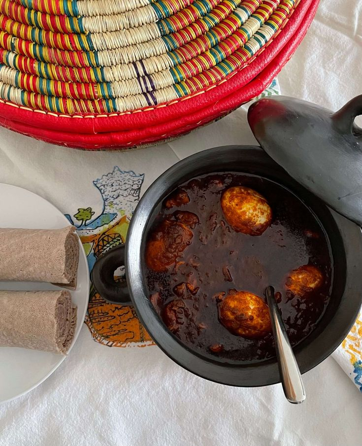
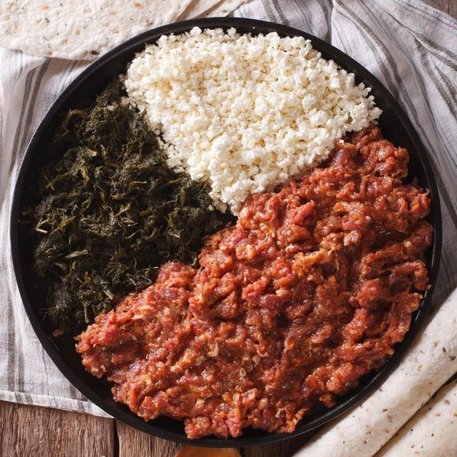
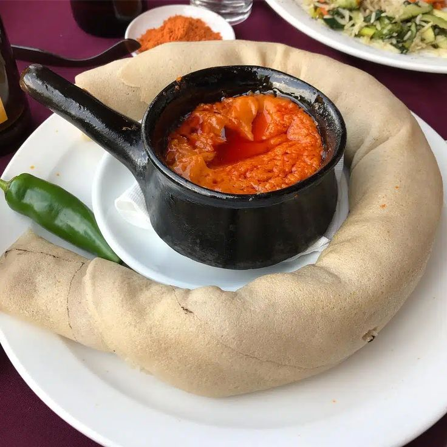
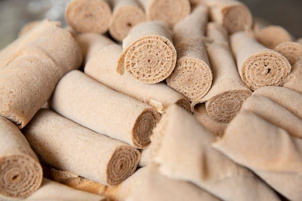
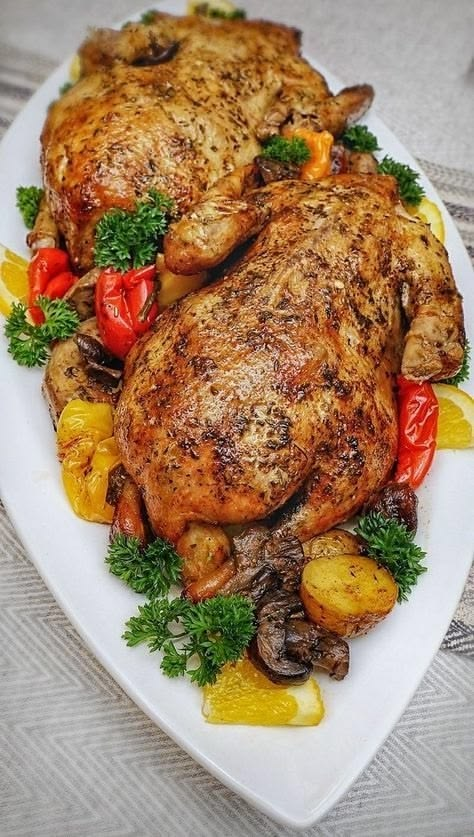
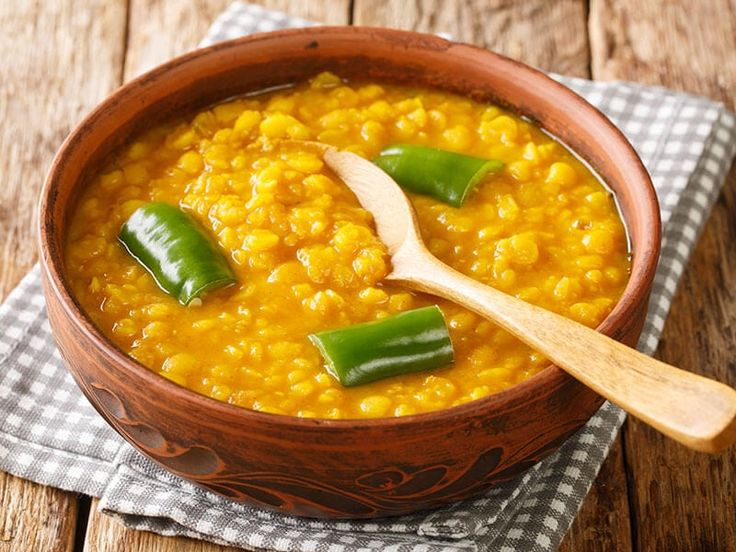
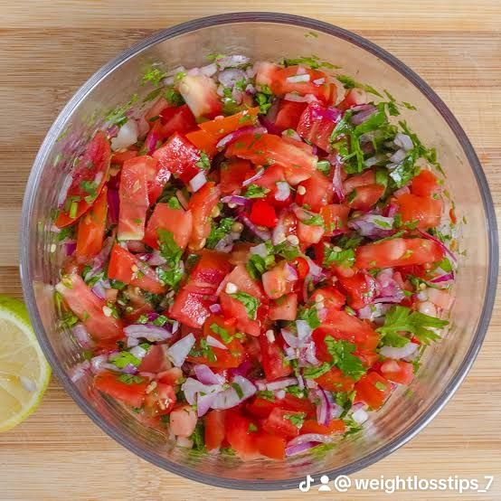

Doro Wat
Spicy chicken stew with berbere, served with injera. A classic Ethiopian comfort dish.
300 ETB
Spicy chicken stew with berbere, served with injera. A classic Ethiopian comfort dish.
300 ETB
Minced raw beef seasoned with mitmita and clarified butter. Served with cottage cheese.
350 ETB
Ground chickpea stew with garlic, ginger and tomato. A hearty vegan favourite.
195 ETB
Fried fish fillet with onions, peppers and a touch of turmeric. Light & flaky.
340 ETB
Large fermented teff flatbread, the foundation of every Ethiopian meal. Serves 2–3.
80 ETB
Traditional Ethiopian coffee, roasted and brewed fresh. Served with popcorn.
65 ETB
Sautéed chicken with rosemary, onion, and green peppers. Mildly spiced.
500 ETB
Split peas cooked with turmeric, ginger and garlic. A mild, golden stew.
185 ETB
Fresh tomato, onion and jalapeño salad with pieces of injera. Zesty and refreshing.
150 ETB